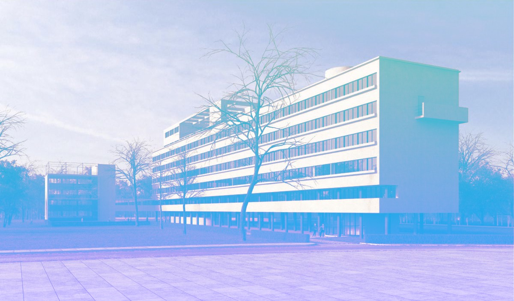

Дом Наркомфина
Жилой дом переходного типа, построенный в 1930 году по проекту архитекторов Моисея Гинзбурга и Игнатия Милиниса для работников Народного комиссариата финансов СССР (Наркомфина). Находится в Москве на Новинском бульваре по адресу дом № 25, корпус 1. Дом Наркомфина является памятником архитектуры конструктивизма.
Здание находится в аварийном состоянии и уже трижды включалось в список «100 главных зданий мира, которым грозит уничтожение».
История создания жилого дома переходного типа
Дом Наркомфина построен по проекту одного из идеологов советского конструктивизма Моисея Гинзбурга, в соавторстве с архитектором Игнатием Милинисом и инженером Сергеем Прохоровым. Ранее, в конце 1925 года была образована творческая организация конструктивистов, названная Объединением современных архитекторов (ОСА). Эта организация оказала значительное влияние на развитие теоретической мысли в ряд наработанных в ней решений позднее был использован при строительстве жилого комплекса.
Идеология
Несмотря на то, что дом Наркомата финансов часто именуется
«домом-коммуной», автор проекта М. Гинзбург считал его «домом переходного типа» (от «буржуазного» дома к «социалистической» коммуне), поскольку в нём не полностью уничтожалась семейная структура, как это предполагалось в домах-коммунах. Называя его так, Гинзбург имел в виду, что обитатели оценят удобства общественного обслуживания и постепенно перейдут к новому бытовому укладу.
В отличие от домов-коммун в основе замысла Дома Наркомфина была идея создания комфортной жилой среды. Его структура намного богаче чем структура многих других имевшихся тогда аналогов. Авторам проекта Гинзбургу и Милинису удалось скомпоновать жилые ячейки в единый корпус настолько необычно, что это заинтересовало даже самого Ле Корбюзье, побывавшего в Доме Наркомфина и посетившего лично квартиру Милютина.
Пространственная организация жилого комплекса
Пространство перед общественным корпусом композиционно выделялось квадратной площадкой, на которой планировалось разместить небольшое здание для детского сада. Все три объёма, различные по массам, строго ритмически уравновешенные, увязанные между собой, составляли композиционное ядро комплекса, сбалансированное в пространстве корпусом прачечной, ориентированным на Новинский бульвар. Перед прачечной также была устроена квадратная площадка, служившая своеобразным парадным пространством, связывающим комплекс с городом, Корпус прачечной также, как и жилой дом, был частично поднят на колонная, что освобождало для прохода пространство первого этажа. Пройдя под корпусом прачечной через «парадный двор» перед входом с Новинского будьвара, по диагональной аллее можно было попасть в общественную зону комплекса или по другой аллее через жилой корпус а уровне «открытого» первого этажа — в парк за домом, где была организована своеобразная видовая площадка.
Основной объём жилого дома Гинзбург расположил на территории двух усадебных садов, отмечая в пояснительной записке к проекту:
«В виду неровности участка, вызывающего в подобных случаях устройство большой поверхности цоколя, в настоящем случае дом поднят в большей своей части на высоту 2,5 метров на отдельных столбах, что является более экономичным и, кроме того, сохраняет нетронутой площадь парка».
Функциональные характеристики будущего здания были определены техническим заданием, составленным Николаем Милютиным, который в указанные годы (1924–1929) исполнял обязанности наркома финансов РСФСР и выступал в качестве заказчика жилого комплекса. Сметная стоимость строительства составила 10 млн рублей.
Архитектура жилого дома
Подлинным новаторством для конца 1920-х годов была архитектура жилого корпуса. Она была настолько необычна и впечатляюща, что лишь немногие смогли увидеть в ней образ жилого дома будущего, черты которого он, безусловно, содержал.
Типы квартир этот заголовок специально увеличен, чтобы проверить интерлиньяж
Здание включает в себя около десятка типов квартир, в том числе:
- Квартира типа F — основное количество жилых ячеек в доме минимального размера. В одни из них можно попасть из остеклённой галереи или коридора, спускаясь по внутриквартирной лестнице в общую комнату, а в другие — поднимаясь в неё также по аналогичной лестнице.
- Квартира типа K — 8 квартир для больших семей располагались в центральной части дома между лестничными клетками. Квартиры представляли собой двухъярусные жилые ячейки высотой каждого этажа 2,3 метра, при этом часть квартиры имела высоту потолка 4,6 метра, и в ней находилась общая жилая комната, выполняющая функции гостиной. На нижнем ярусе были устроены коридор, передняя, терраса и кухня, а в верхнем — две спальни размером 19,9 и 12,1 м². Кроме открытой террасы на втором этаже, для отдыха на поздухе и принятия солнечных ванн была предназначена также плоская крыша с разбитым на ней цветником.
- Квартира типа 2F. Сочетание разных жилых ячеек позволило избежать повторения галерей и коридоров на каждом этаже и сделать их светлыми, а во всех квартирах обеспечить сквозное проветривание.
Фасады жилого корпуса выглядят по разному, с восточной стороны, от Садового кольца — длинные ленточные окна и открытая галерея второго этажа. С противоположной западной стороны иная картина: большие квадраты остекления двухсветных общих комнат-гостиных и небольшие окна кухонь. В результате все спальни в доме ориентированы на утреннее солнце, а гостиные на вечернее.
«Квартиры для одиночек замелили семьями, семейные сделали коммунальными. Вместо закрытой столовой (коммунальный корпус) на пятом этаже сделали коммунальную кухню с рядами плит и корыт. Детский сад закрыли, коммунальный корпус превратился в типографию. Прачечная сохранилась, но она постепенно перестала обслуживать жильцов. В конце концов дом передали в ЖЭК, покрасили немыслимой жёлтой краской и перестали ремонтировать».
Критика проекта
С технической стороны
Объектом критика, в первую очередь со стороны качества использованных строительных материалов, стали несущие стены, так как жилой корпус ни разу не ремонтировали за все 80 лет его существования. Штукатурка фасадов осыпалась, а стены из кустарно выполненных цементных и шлаковых блоков, сделанных прямо на стройке, разрушались. Наполнителями в цементном растворе служили разные подручные материалы, в том числе, металлургический шлак, солома, камыш.